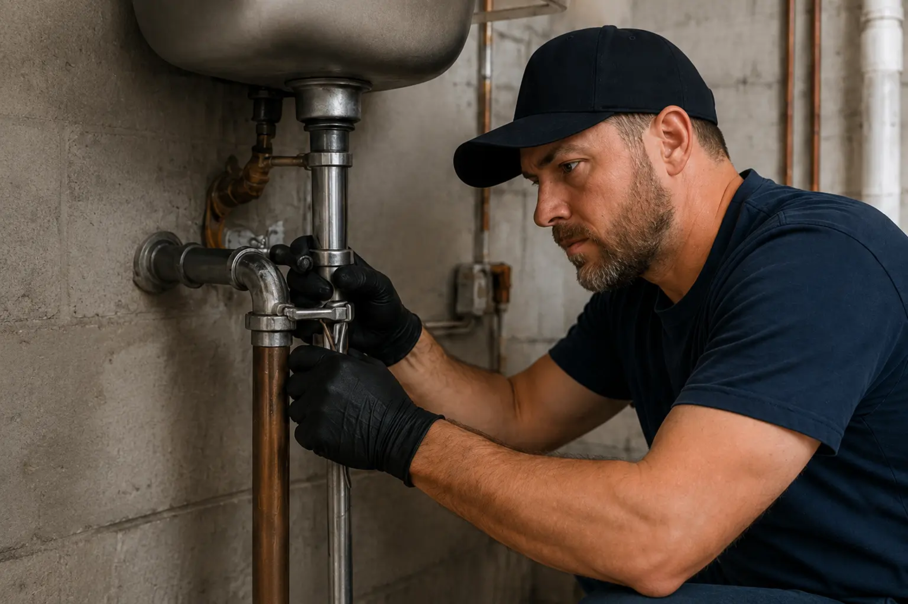
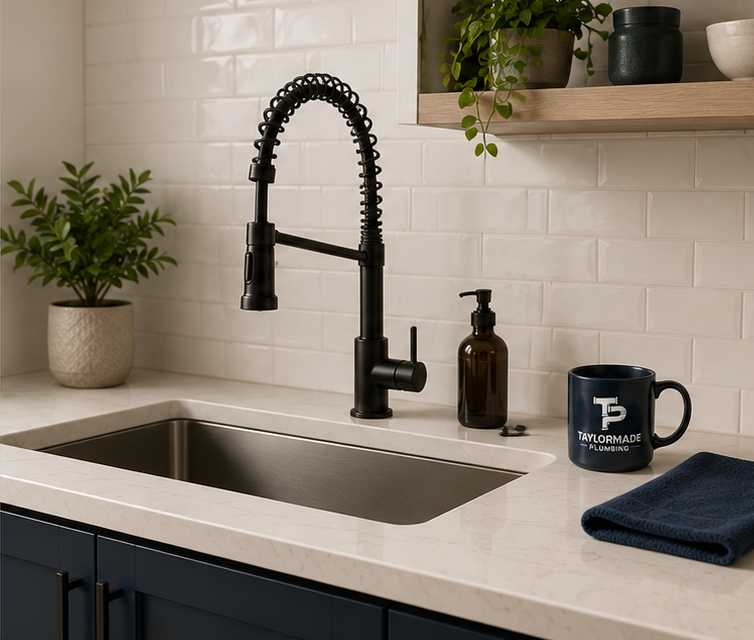

Clear answers, careful workmanship, and dependable follow-through for homeowners who want the job done correctly.
We explain the problem, protect your home, and follow through on the details.
From everyday repairs to larger plumbing projects, TaylorMade Plumbing serves St. Petersburg and the surrounding Tampa Bay area. Explore the full residential plumbing services or book service online.
Repair, replacement and installation support for units that leak, fail to heat or no longer meet your household's hot-water needs. We can help evaluate the existing system and explain the next step.
Repair and replacement for sinks, faucets, toilets and showers, including leaks, worn parts, poor flow and fixture upgrades that need careful connections.
Water and drain repiping for aging, damaged or difficult-to-maintain systems. The approach is based on the existing piping, access, condition and scope of the home project.
Residential plumbing gas-line work where permitted and applicable. Discuss the appliance, location and project scope first so required evaluations, permits and coordination can be addressed.
Troubleshooting and clearing for slow, clogged or recurring drains. Share where the symptom appears and what you have noticed so the right service can be considered.
Plumbing support for kitchen, bathroom and other residential remodels, from fixture layout changes to coordinating new supply, drain and water connections with the project plan.
Every visit is built around the same standard: understand the problem, communicate the options, perform the work carefully, and leave the space better than we found it.
No pressure, no confusing jargon, and no unexplained work.
Clean work areas, thoughtful preparation, and professional conduct.
Attention to the small details that make the result dependable.

From the first conversation to the final walkthrough, you know what happens next.
Tell us what is happening and where you are located.
We ask the right questions and evaluate the situation.
You get clear options and an honest path forward.
We perform the agreed work carefully and cleanly.
TaylorMade Plumbing LLC serves homeowners in St. Petersburg and communities throughout the Tampa Bay area. Learn more about TaylorMade Plumbing and our straightforward approach: understand the problem, explain the available options clearly, complete the agreed work professionally, and leave the work area orderly.
Homeowners may need help with a leaking fixture, a water heater that is no longer working properly, a clogged or damaged drain, aging supply lines, repiping, gas-line work, or plumbing associated with a kitchen or bathroom renovation. TaylorMade provides residential service for these types of projects and can help determine the appropriate next step.
Communication is an important part of the customer experience. Instead of leaving homeowners guessing about what is happening, the goal is to explain the issue in understandable terms and discuss the available path forward. Service is centered on responsiveness, workmanship, professionalism, and respect for the customer's home.
TaylorMade Plumbing is based in St. Petersburg, Florida and serves homeowners in St. Petersburg, Clearwater, Tampa, Seminole and surrounding Tampa Bay communities. Availability can vary by job type, address and scheduling, so review the full service area details or contact TaylorMade before scheduling.
Primary business location for residential plumbing service, including repairs, replacements and larger home projects.
Service availability extends to Clearwater, Tampa, Seminole and nearby Tampa Bay communities; confirm your address before booking.
Contact TaylorMade to discuss your location, symptoms and service needs before requesting an appointment.
Publicly accessible reviews highlight honesty, professionalism, responsiveness and workmanship. Read more TaylorMade customer reviews.
Permit requirements depend on the project and jurisdiction. Use the official Florida DBPR contractor resources and Pinellas County residential permitting information as starting points, then confirm the requirements for your address and scope.
Questions about location, timing or the right starting point? Contact TaylorMade Plumbing before you schedule.
Call TaylorMade Plumbing or request service online.